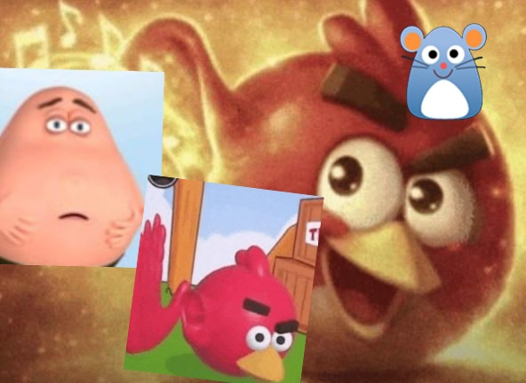
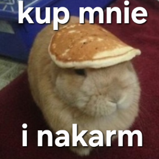
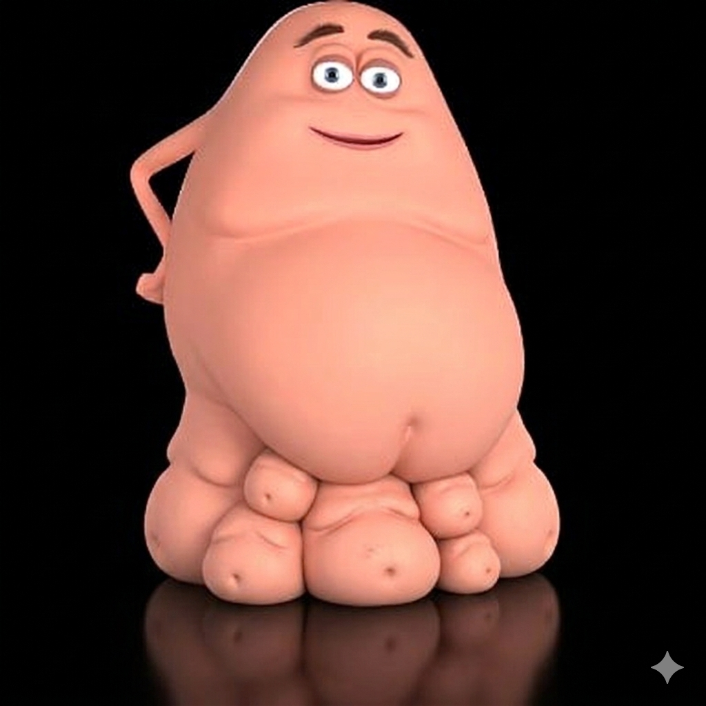

Bebzun to bebech który jest bebechem i ma bebeszki bebeszkujące. Bebzun lubi jeść wszystko i ma rączki. Ma też spodnie rozmiar XXXXXXXXXXXXXXXXL. więc to jedyne o nim wiem.

Tak naprawdę, bebzun tyle je że czasem wybucha bo się przejadł i musi pić coca colę z espumiasanem (wtf) Ale tak to jest grzecznym brzuchem

Kto jest właścicielem bebzuna? TEN GŁUPI KRÓLIK POWYŻEJ

Bebzunita bebzunkowa bebeszek gruby